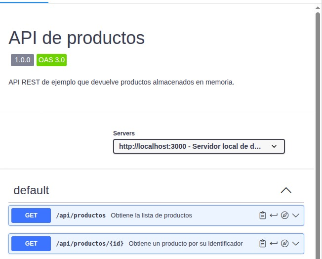

API
¿Qué es OpenAPI?
OpenAPI es un estándar, independiente del lenguaje de programación, para describir una API REST: qué rutas tiene, qué métodos HTTP admite, qué parámetros recibe y qué respuestas puede devolver. La descripción se guarda en un fichero YAML o JSON. En este proyecto es openapi.yaml, en la raíz del repositorio.
Este fichero no ejecuta ni implementa la API: solo la describe. La API real está en app.js.
¿Para qué sirve Swagger UI?
Swagger UI es una herramienta que lee un fichero OpenAPI y lo convierte en una documentación web visual e interactiva. Permite ver los endpoints, sus parámetros y sus respuestas, y puede usarse para probarlos. Se ha utilizado Swagger Editor para escribir y validar el fichero, y Swagger UI para visualizarlo.
Endpoints
| Método | Ruta | Descripción | Respuestas |
|---|---|---|---|
| GET | /api/productos | Devuelve la lista de productos | 200 |
| GET | /api/productos/{id} | Devuelve un producto por su id (entero) | 200, 404 |
Documentación visualizada

El fichero completo está en openapi.yaml.